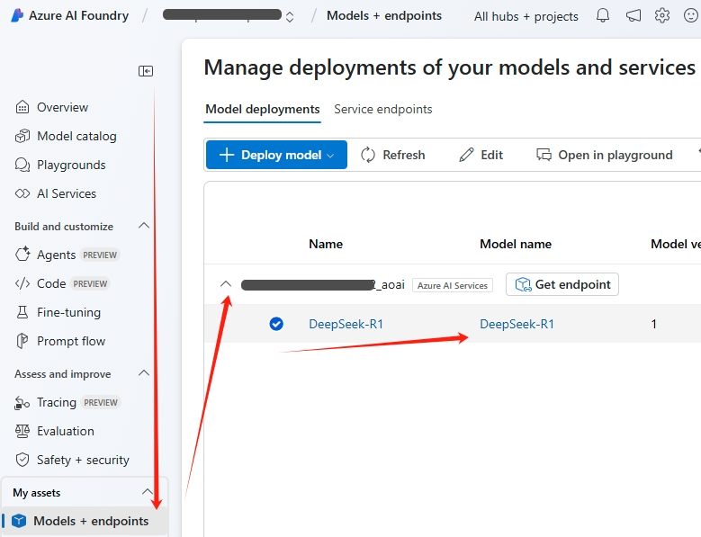
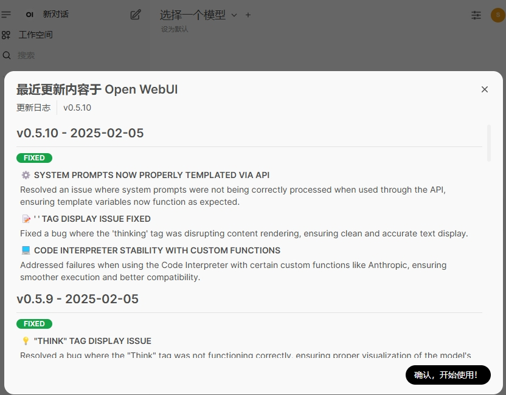

在 Azure 上部署 DeepSeek
DeepSeek 是杭州深度求索人工智能基础技术研究有限公司发布的开源大模型，最近是持续火爆，使得官方服务经常不可用。网上各种本地部署和私有部署的文章已经很多，这里我们提供一个全部基于 Azure 的私有部署方案。
使用 Azure AI Foundry 部署 DeepSeek
Azure AI Foundry 是微软推出的一个 AI 服务平台，提供了一站式的 AI 服务，包括模型训练、推理、部署等等。创建 Azure AI Foundry 请参考 官方文档 。
在 Azure AI Foundry 中，我们可以直接部署 DeepSeek 模型，无需自己搭建环境，非常方便。但是有个小问题，Azure AI Foundry 的部署生成不是标准的 DeepSeek API，也不兼容 Ollama，不能直接拿来连接到 Open WebUI，所以我提供了一个转换的函数，配置到 Open WebUI 中就可以了。
我们可以使用 Azure AI Foundry 来部署 DeepSeek。
- 开始部署 DeepSeek 模型

- 选择模型后，可以看到 DeepSeek 模型本身不要钱。(模型是开源免费的嘛)

涉及到 Azure 的计算资源，还是需要一点点钱的。具体的费用可以参考 Azure 官方定价
- 无需更多配置了，点击“创建资源并部署”按钮，等待部署完成。

- 部署完成后，可以看到 DeepSeek 模型的 Endpoint。

先记下模型的 Model Name，一般默认是 DeepSeek-R1，然后点击模型的 Get Endpoint 按钮。

记下模型的 Azure AI model inference endpoint 和 Key。上述 3 个值会在后续配置 Open WebUI 函数时用到。
使用 Azure App Service 部署 Open WebUI
Open WebUI 是一个可扩展、功能丰富且用户友好的自托管 AI 平台，设计为完全离线运行。它支持多种 LLM 运行器（如 Ollama 和与 OpenAI 兼容的 API），并内置用于 RAG 的推理引擎，是一个功能强大的 AI 部署解决方案。虽然它支持多种方式本地安装，但毕竟体积较大，部署起来还是有一定难度。使用 Azure App Service 一健部署到云端，无需本地下载安装包或 Docker 镜像，非常方便。
创建 App Service
方法非常简便， 主要步骤如下：
- 在 Azure 门户 中搜索 App Service，然后点击左上角“创建”按钮，选择“Web 应用”。
- 按提示填写应用名称、资源组、区域等信息。以下几点需要注意：
- Publish 选择 Container。
- Operating System 选择 Linux。
- Region 建议选择 Japan West，因为这个区域从网络访问来看中国大陆的访问速度较快。
- Pricing plans 选择 F1 Free，咱们自己用免费的足够了。
- 下一页 Database 不选。
- Container 页，配置以下几点：
- Image Source 选 Other container registries
- Access Type 选 Public
- Registry server URL 填写
ghcr.io - Image and tag 填写
openwebui/openwebui:main

- 其它页都不用动，直接点击“查看 + 创建”按钮。
稍等片刻，App Service 就创建好了。点击 Overview 页的 Default domain，就可以访问 Open WebUI 了。

免费档资源规格较小，但 Open WebUI 镜像很大，加载也慢，启动需要5-6分钟，请耐心等待。多刷新几次，直到看到 Open WebUI 的登录界面。首次使用需要注册一个账号。
Open WebUI 版本更新
版本更新比较频繁，由于在 Azure App Service 创建时已经设置了 Open WebUI/Open WebUI:main 作为镜像的标签。所以只需要停止再启动 App Service 即可更新到最新版本，非常方便。稍微遗憾的是，App Service 底层的计算资源是随机分配的，所以每次重新部署时 Open WebUI 中已经保存的用户信息会丢失。咱们自己使用，重新注册一下就好了。
发现版本更新提示

停止再启动 App Service 后再访问 Open WebUI，发现已经更新到最新版本了。

配置 Open WebUI 函数连接到 Azure AI Foundry 部署的 DeepSeek
首次打开 Open WebUI 会提示创建管理员账号，创建后即可登入。点击左下角用户名，弹出菜单中点击 “管理员面板”。

点击左侧“函数”菜单，然后点击“+”按钮。

函数名称填写“DeepSeek”，函数描述填写 “DeepSeek from Azure AI Foundry”。
函数内容填写如下代码的内容，
点击“保存”按钮，弹出确认层点确认即可。保存好后，点击函数右边的齿轮按钮，点击“默认” 2 字，可以输入自己的值。

在弹出的层里填入前面创建 DeepSeek 部署时记下的 3 个变量值，Azure Endpoint 填 Azure AI model inference endpoint，注意这里填写的是结尾为 /models 的 URL，比如 https://contoso-abcd1234-eastus2.services.ai.azure.com/models 。
Azure Api Key 填 Key，Azure Model Name 填 Model Name。
最后把函数最右侧圆点切换成启用。再占左上角“新对话”，模型选择菜单就会出现 DeepSeek 了。

至此，我们已经成功部署了 DeepSeek 到 Azure 平台，并且配置到 Open WebUI 中，可以愉快的使用了。